Demanda de Informação
- Acompanhar Demanda de Informação
A tela Demanda de Informação é apresentada automaticamente, após a geração da demanda, ou selecionando a opção Demanda de Informação no menu do sistema SGDoc:
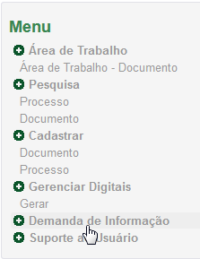
Menu do sistema SGDoc
A tela Demanda de Informação é apresentada:
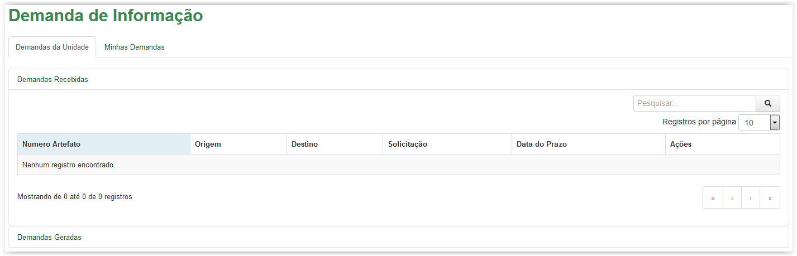
Tela Demanda de Informação
A tela Demanda de Informação está dividida em "abas" Demandas da Unidade e Minhas Demandas, além das "Áreas" Demandas Recebidas e Demandas Geradas:
Utilize o campo 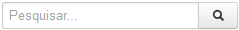 para pesquisar por alguma informação ou característica da demanda, dentro da Área selecionada.
Quando não houver nenhuma demanda para a aba selecionada, o sistema apresenta a mensagem “Nenhum registro encontrado”. Caso contrário, o sistema lista na grid todas as demandas existentes.
- Selecionar outra Aba ou Área dentro da tela Demanda de Informação
 Formas de "navegar" entre as abas e as áreas dentro da Demanda de Informação!
Formas de "navegar" entre as abas e as áreas dentro da Demanda de Informação!
- A aba (Demandas da Unidade ou Minhas Demandas) que o usuário está trabalhando é a aba que está ativa 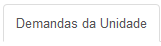 na tela:
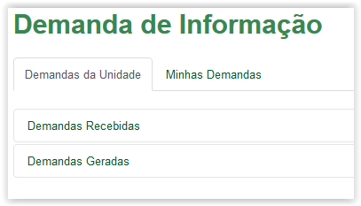
Tela Demanda de Informação - Aba Demandas da Unidade - Aba ativa
- Posicione o mouse e clique no nome da aba que deseja tornar ativa:
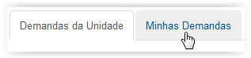
Selecionando a aba para se tornar ativa
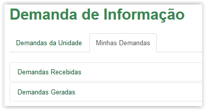
Tela Demanda de Informação - Aba Minhas Demandas - Aba ativa
- A Área (Demandas Recebidas ou Demandas Geradas) que o usuário está trabalhando, ou seja, a área ativa, é aquela que está "aberta":
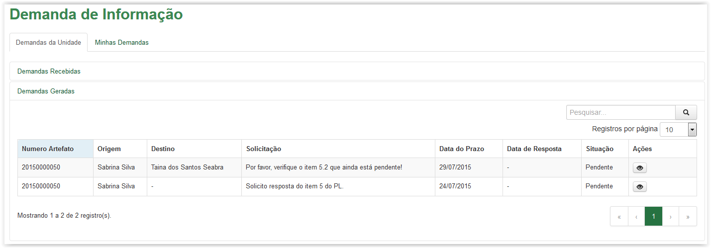
Tela Demanda de Informação - Aba Demandas da Unidade - Área Demandas Geradas
- Somente é possível visualizar uma "Área" de cada vez. Assim, ao selecionar outra área, a que estava ativa se fecha para se tornar visível a que foi selecionada por último. Para selecionar uma área, basta posicionar o mouse e clicar no seu nome:
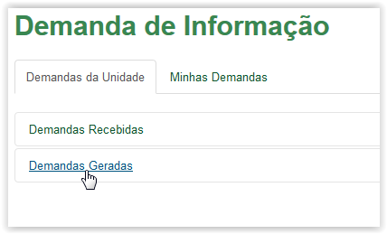
Selecionando a Área para se tornar ativa
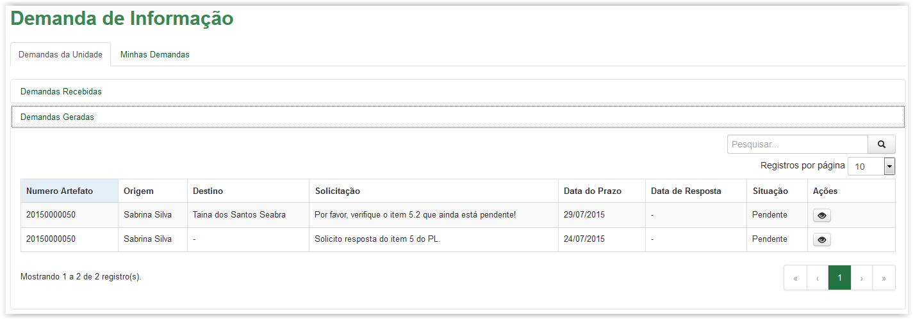
Tela Demanda de Informação - Aba Demandas da Unidade - Área Demandas Geradas
- Visualizar e "navegar" entre os registros
Formas de visualizar as demandas de cada Área!
- Campo Registros por página: Cada Área possui um campo para seleção da quantidade de registros que se deseja visualizar por página. O sistema apresenta por padrão 10 registros por página. Mas essa quantidade pode ser alterada selecionando qualquer um dos valores do campo:

- Barra de Paginação: É possível também utilizar a barra de navegação para visualizar a primeira ou a última paginação, a anterior ou a próxima, ou então selecionar qual a paginação que se deseja visualizar. Assim, à medida que os registros vão aumentando e ultrapassando o quantitativo selecionado para cada página, o sistema cria outra(s) página(s). Dessa forma, onde se vê o número 1, na barra de paginação, pode ser que sejam criadas também as páginas 2, 3 e assim por diante:

- "Contador de Registros": Logo abaixo da grid existe um “contador” que informa quantos registros são visíveis naquela paginação e quantos registros existem no total. Por exemplo: se houver um total de 500 demandas e a paginação estiver selecionada para visualizar 100 por vez, o contador informará da seguinte forma: “Mostrando 1 a 100 de 500 registro(s).” :
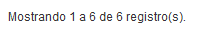
Created with the Personal Edition of HelpNDoc: Easily create CHM Help documents